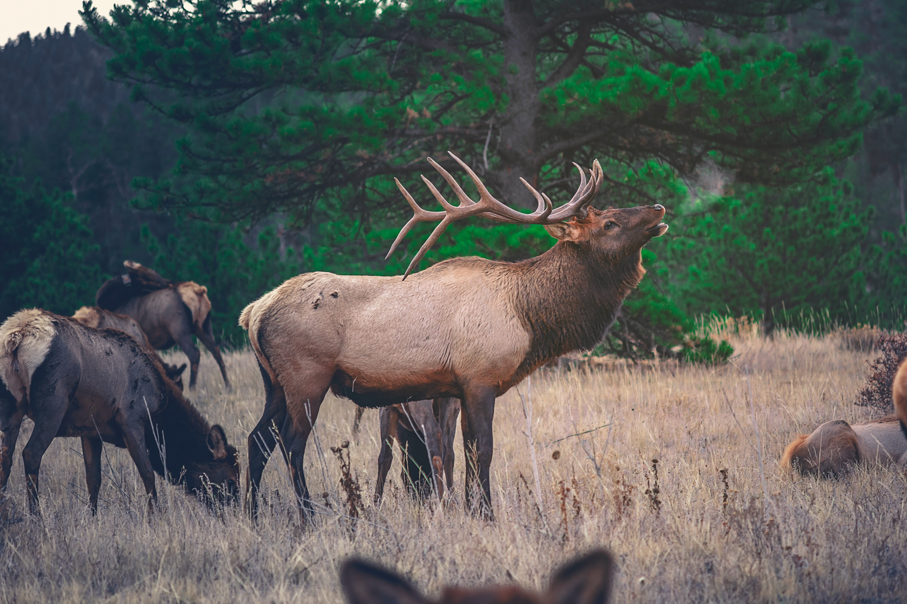

Tropical Savannah
The savannah is a biome characterized by an arboreal-arboreal stratum in which its tree canopy has a scarce coverage
either by small trees or by having a low density of them, which allows it a continuous and generally high herbaceous stratum.

Jungle
Dense forest of a warm climate, like the tropical forest. The term jungle is used to describe the rainforest, a forest
characterized by extensive biodiversity and densely populated, including weeds, young trees, vines and lianas, and herbaceous plants

Ocean
A large expanse of water on planet Earth, especially that which separates two or more continents.
The oceans form most of the planet's surface.